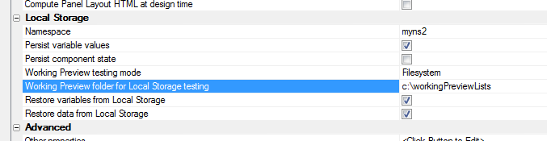
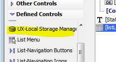

Persisting Data To Local Storage
The UX component can persist three different types of data to Local Storage
- List data
- UX component variables
- UX component state (not currently implemented)
Persisting Variables
Variables are persisted whenever a 'trigger' event occurs. For some controls (e.g. Radiobutton,. Checkbox, Slider, etc.), the 'trigger' is when the value in the control is changed. For textbox and textarea controls, the 'trigger' is when the control is blurred (i.e. loses focus) and the value in the field has changed.
You can also manually trigger the event by calling the UX component's {dialog.object}.persistVariablesToLocalStorage() method.
When variables are persisted to Local Storage various client-side events are fired.
The onBeforePersistControlValuesToLocalStorage event fires first. This event fires before the variables are persisted. Its purpose is to allow you to specify any additional data that you want to persist along with the variable values. Your code can set the e.userData property. The value you set in this property will be available when the onRestoreVariablesFromLocalStorage fires.
The localStorageEncryption event fires next. The event allows you to add your own encrypting to the JSON data that is about to be stored to Local Storage. The event handler gets the JSON data in the e.data property and the event handler can set e.data to the encrypted string.
When the component is loaded if the 'Restore variables from Local Storage' setting is true (see 'Local Storage Settings' below), then the previously persisted variable values (if any) will be restored.
The onRestoreVariablesFromLocalStorage event will fire after the data has been restored. This event handler can access the e.userData property which was optionally defined when the onBeforePersistControlValuesToLocalStorage event was fired.
If the 'Restore variables from Local Storage' property is set of false, you can still manually restore persisted variables by calling the UX component's {dialog.object}._restoreVariablesFromLocalStorage() method.
Persisting List Data
Each List that you add to a UX component has its own settings for controlling if the List data should be persisted. If the data in a List is static (i.e. is never changed while the application is running), then there is no need to persist the data.
To turn on data persistence for List, edit the List properties and check the
Local Storage Settings
You can control what gets persisted to Local Storage by setting properties in the UX component as shown below.

- Namespace - In order to manage the keys in Local Storage, you specify a 'namespace'. All keys for this component will use the namespace as a prefix. If you specify <Default> or leave the namespace blank, a system generated namespace will be used. In addition to the namespace specified here, all keys will also include 'ALPHA_' in the namespace. This allows for easy identification of keys in Local Storage that are tied to any UX application. For example, if you set the 'namespace' property to 'orderApp', the key that stores the data for a List called 'Orders' will be 'ALPHA_orderAPP.LIST.ORDERS'.
- Persist variable values - Check this property to persist to Local Storage the value of all variables on the UX. (A 'variable' is associated with each data entry control on the UX. For example, a textbox, radiobutton, checkbox, slider, etc. all have an associated 'variable' that contains the current 'value' for the control.)
- Persist component state - (Not currently implemented) Stores in Local Storage information such as what Panel in a Panel Navigator currently has focus, what Panels in a Panel Layout are currently visible, etc.
- Working Preview testing mode - When you are in Working Preview you can specify that the local file system on your computer should be used for storing data that would otherwise be put in the browser's Local Storage. The benefit of this is to allow you to easily see what's being stored in Local Storage because you can simply examine the contents of the files in the specified folder on your computer.
Note: Using the 'Filesystem' option for Local Storage is significantly slower than using the browser Local Storage.
- Restore variables from Local Storage - If this property is checked, then when the component is re-loaded, any variable whose state was persisted to Local Storage will be restored.
- Restore data from Local Storage - If this property is checked the data in the List controls are restored when the component is reloaded. (Only the Lists that you indicated should be persisted to Local Storage are restored. Each List has its own setting to indicate if it is persistable. See below for more information.)
For List controls, you control whether the data in the List is persisted to Local Storage by setting a property in the List builder for the List:

Managing Local Storage
Local Storage is a shared resource and it is limited. The exact limitation is a function of your device. In order to free up storage space for an application on a device, it might be necessary to delete storage being used by some other application that you are no longer using.
You can add a pre-defined control to your UX to manage Local Storage. This control is primarily intended for use by developers while they are designing the application. It is not ideal for the users of your application.
To insert the 'Local Storage Manager' into your component, select the control from the 'Defined Controls' section in the UX toolbox.
